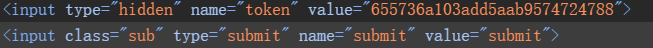

跨站请求伪造（CSRF）
攻击者会伪造一个请求[一般是链接]欺骗目标用户进行点击，用户一旦点击了这个请求，整个攻击也就完成了。所以CSRF攻击也被称为"one click"攻击。
- 判断是否存在CSRF漏洞： 判断其对关键信息[比如密码等敏感信息]的操作[增删改]是否容易被伪造。 1. 对目标网站增删改的地方标记，观察逻辑，判断是否可以被伪造 > 修改管理员账号不用验证旧密码 > > 对敏感信息修改没有使用安全的token验证 2. 确认凭证的有效期[提高CSRF被利用效率] > 虽然退出关闭浏览器，但Cookie仍然有效，或session没有及时过期，使CSRF简单
- 与XSS区别：
| CSRF | XSS |
|---|---|
| 借用户的权限攻击，没有拿到用户的权限 | 直接盗取用户权限 |
CSRF（GET）
没有token+GET[在URL里，POST在对话体中]
/pikachu/vul/csrf/csrfget/csrf_get_edit.php?sex=girl&phonenum=12345678922&add=beijing&email=lucy%40pikachu.com&submit=submit
直接修改信息，前面补全协议
Token
每次请求，都增加一个随机码[要足够长、随机，不易伪造]，后台每次对随机码验证
/pikachu/vul/csrf/csrftoken/token_get_edit.php?sex=girl&phonenum=12345678922&add=beijing+xxx&email=lucy%40pikachu.com&token=383626a103a560173a225264938&submit=

防范措施
增加token验证(常用的做法)：
1，对关键操作增加token参数，token值必须随机，每次都不一样;
关于安全的会话管理(避免会话被利用):
1，不要在客户端端保存敏感信息(比如身份认证信息);
2，测试直接关闭，退出时，会话过期机制
3，设置会话过期机制，比如15分钟内无操作，则自动登录超时
访问控制安全管理:
1，敏感信息的修改时需要对身份进行二次认证，比如修改账号时，需要判断旧密码;
2，敏感信息的修改使用post，而不是get;
3，通过http头部中的referer来限制原页面
增加验证码：
一般用在登录(防暴力破解)，也可以用在其他重要信息操作的表单中(需要考虑可用性)